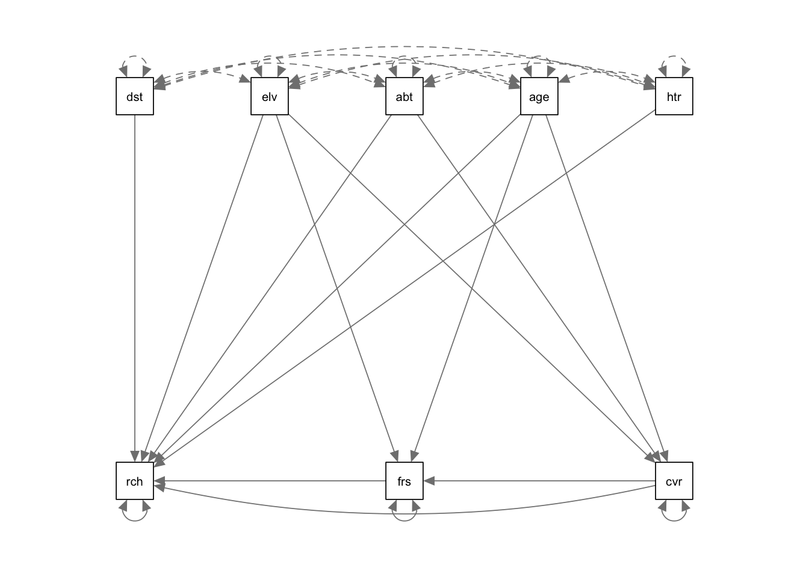

7 Summary and advanced topics
7.1 Reminder: Modelling Strategy
Things to note:
- For an lm, the link function is the identity function.
- Fixed effects \(\operatorname{f}(x)\) can be either a polynomial \(\left( a \cdot x = b \right)\) = linear regression, a nonlinear function = nonlinear regression, or a smooth spline = generalized additive model (GAM).
- Random effects assume normal distribution for groups.
- Random effects can also act on fixed effects (random slope).
- For an lm with correlation structure, C is integrated in Dist. For all other GLMMs, there is another distribution, plus the additional multivariate normal on the linear predictor.
Strategy for analysis:
- Define formula via scientific questions + confounders.
- Define type of GLM (lm, logistic, Poisson).
- Blocks in data -> Random effects, start with random intercept.
Fit this base model, then do residual checks for
- Wrong functional form -> Change fitted function.
- Wrong distribution-> Transformation or GLM adjustment.
- (Over)dispersion -> Variable dispersion GLM.
- Heteroskedasticity -> Model dispersion.
- Zero-inflation -> Add ZIP term.
- Correlation -> Add correlation structure.
And adjust the model accordingly.
Packages:
baseR.{R}:lm.{R},glm.{R}.lme4.{R}: mixed models,lmer.{R},glmer.{R}.mgcv.{R}: GAM.nlme.{R}: Variance and correlations structure modelling for linear (mixed) models, usinggls.{R} +lme.{R}.glmmTMB.{R}: Generalized linear mixed models with variance / correlation modelling and zip term.
7.2 Thoughts About the Analysis Pipeline
In statistics, we rarely use a simple analysis. We often use an entire pipeline, consisting, for example, of the protocol that I sketched in chapter 5.3. What we should constantly ask ourselves: Is our pipeline good? By “good”, we typically mean: If 1000 analyses are run in that way:
- What is the typical error of the estimate?
- What is the Type I error (false positives)?
- Are the confidence intervals correctly calculated?
- …
The way to check this is to run simulations. For example, the following function creates data that follows the assumptions of a linear regression with slope 0.5, then fits a linear regression, and returns the estimate
getEstimate = function(n = 100){
x = runif(n)
y = 0.5 * x + rnorm(n)
fit = lm(y ~ x)
x = summary(fit)
return(x$coefficients[2, 1]) # Get fitted x weight (should be ~0.5).
}The replicate function allows us to execute this 1000 times:
set.seed(543210)
out = replicate(1000, getEstimate())Plotting the result, we can check whether the linear regression is an unbiased estimator for the slope.
hist(out, breaks = 50)
abline(v = 0.5, col = "red")“Unbiased” means that, while each single estimate will have some error, the mean of many estimates will spread around the true value.
Explicitly calculating these values
Bias
mean(out) - 0.5 # Should be ~0.## [1] -0.001826401Variance / standard deviation of the estimator
sd(out)## [1] 0.3587717To check p-values, we could run:
set.seed(12345)
getEstimate = function(n = 100){ # Mind: Function has changed!
x = runif(n)
y = rnorm(n) # No dependence of x! Identical: y = 0 * x + rnorm(100).
fit = lm(y ~ x)
x = summary(fit)
return(x$coefficients[2, 4]) # P-value for H0: Weight of x = 0.
}
out = replicate(2000, getEstimate())
hist(out) # Expected: Uniformly distributed p-values. -> Check.mean(out < 0.05) # Expected: ~0.05. But this is NO p-value... Check H0/H1!## [1] 0.0515# Explanation of syntax: Logical vectors are interpreted as vectors of 0s and 1s.To check the properties of other, possibly more complicated pipelines, statisticians will typically use the same technique. I recommend doing this! For example, you could modify the function above to have a non-normal error. How much difference does that make? Simulating often beats recommendations in the books!
7.3 Nonparametric estimators
7.3.1 The bootstrap
Standard (non-parametric) bootstrap
The bootstrap is a method to generate approximate confidence intervals based on resampling the data. Imagine you have some kind of weird data distribution:
set.seed(123)
data = ifelse(rbinom(100, 1, 0.5) == 1, rexp(100, 4) , rnorm(100, -2))
hist(data)We want to calculate the mean and it’s uncertainty. The mean is simple, but what is the uncertainty of the mean? The standard error can’t be used, because this is not a normal distribution. If we don’t know the distribution, we can’t use a parametric method to calculate the confidence interval.
The solution is the bootstrap. The idea is the following: We re-sample from the data to generate an estimation of the uncertainty of the mean. Let’s first do this by hand:
set.seed(123)
performBootstrap = function(){
resampledData = sample(data, size = length(data), replace = T)
return(mean(resampledData))
}
bootstrappedMean = replicate(500, performBootstrap())
hist(bootstrappedMean, breaks = 50)
abline(v = mean(data), col = "red")Roughly, this distribution is the confidence interval for the mean for this particular distribution.
In detail, there are a few tricks to correct confidence intervals for the bootstrap, which are implemented in the boot.{R} package. Here is how you would do a boostrap with the boot package. The trick here is to implement the function f().{R}, which must take the data as well as a selection of data points “k” (for example c(1,3,4,5,8,9), or 1:20, etc.) as input, and calculate the desired statistics.
library(boot)
f = function(d, k){ mean(d[k]) }
out = boot(data, f, 500)
plot(out)boot.ci(out)## BOOTSTRAP CONFIDENCE INTERVAL CALCULATIONS
## Based on 500 bootstrap replicates
##
## CALL :
## boot.ci(boot.out = out)
##
## Intervals :
## Level Normal Basic
## 95% (-1.2730, -0.7144 ) (-1.2755, -0.7177 )
##
## Level Percentile BCa
## 95% (-1.2427, -0.6849 ) (-1.2699, -0.7177 )
## Calculations and Intervals on Original Scale
## Some BCa intervals may be unstableTask
Calculate a bootstrapped confidence interval for the mean of this exponential distribution. Compare it to the naive standard error:
set.seed(1234)
data = rexp(500)Solution
Jacknife
An alternative to the bootstrap is the jacknife.
From Wikipedia:
In statistics, the jackknife is a resampling technique especially useful for variance and bias estimation. The jackknife predates other common resampling methods such as the bootstrap. The jackknife estimator of a parameter is found by systematically leaving out each observation from a data set and calculating the estimate and then finding the average of these calculations. Given a sample of size N, the jackknife estimate is found by aggregating the estimates of each N-1-sized sub-sample.
The jackknife technique was developed by Maurice Quenouille (1949, 1956). John Tukey (1958) expanded on the technique and proposed the name “jackknife” since, like a physical jack-knife (a compact folding knife), it is a rough-and-ready tool that can improvise a solution for a variety of problems even though specific problems may be more efficiently solved with a purpose-designed tool.
The jackknife is a linear approximation of the bootstrap.
library(bootstrap)
theta = function(x){ mean(x) }
results = jackknife(data, theta)
results$jack.se## [1] 0.04727612results$jack.bias## [1] 0Parametric bootstrap
We call it a parametric bootstrap if we don’t re-sample the data to generate new data, but simulate from the fitted model. Simple example with a linear model:
set.seed(123)
x = runif(100, -2, 2)
y = rnorm(100, 1 + 2*x, 1)
dat = data.frame(x = x, y = y)
m = lm(y ~ x)
summary(m)##
## Call:
## lm(formula = y ~ x)
##
## Residuals:
## Min 1Q Median 3Q Max
## -2.23797 -0.61323 -0.01973 0.59633 2.21723
##
## Coefficients:
## Estimate Std. Error t value Pr(>|t|)
## (Intercept) 0.94612 0.09693 9.761 4e-16 ***
## x 1.97754 0.08546 23.141 <2e-16 ***
## ---
## Signif. codes: 0 '***' 0.001 '**' 0.01 '*' 0.05 '.' 0.1 ' ' 1
##
## Residual standard error: 0.9693 on 98 degrees of freedom
## Multiple R-squared: 0.8453, Adjusted R-squared: 0.8437
## F-statistic: 535.5 on 1 and 98 DF, p-value: < 2.2e-16We are interested in getting the confidence intervals for the coefficients of the model:
resampledParameters = function(){
newData = dat
newData$y = unlist(simulate(m))
mNew = lm(y ~ x, newData)
return(coef(mNew)[1])
}
bootstrappedIntercept = replicate(500, resampledParameters())
hist(bootstrappedIntercept, breaks = 50)
abline(v = coef(m)[1], col = "red")
The same with the boot.{R} package. We need a statistics:
foo = function(out){
m = lm(y ~ x, out)
return(coef(m))
}and a function to create new data
rgen = function(dat, mle){
out = dat
out$y = unlist(simulate(mle))
return(out)
}
b2 = boot(dat, foo, R = 1000, sim = "parametric", ran.gen = rgen, mle = m)
boot.ci(b2, type = "perc", index = 1)## BOOTSTRAP CONFIDENCE INTERVAL CALCULATIONS
## Based on 1000 bootstrap replicates
##
## CALL :
## boot.ci(boot.out = b2, type = "perc", index = 1)
##
## Intervals :
## Level Percentile
## 95% ( 0.7534, 1.1287 )
## Calculations and Intervals on Original ScaleApplication: Simulated likelihood ratio test
The parametric bootstrap can be used to generate simulated likelihood ratio tests for mixed models. This allows us to test for the significance of variance components without specifying degrees of freedom. We could program this ourselves, but here is a package:
library(pbkrtest)
data(beets, package = "pbkrtest")
head(beets)## harvest block sow yield sugpct
## 1 harv1 block1 sow3 128.0 17.1
## 2 harv1 block1 sow4 118.0 16.9
## 3 harv1 block1 sow5 95.0 16.6
## 4 harv1 block1 sow2 131.0 17.0
## 5 harv1 block1 sow1 136.5 17.0
## 6 harv2 block2 sow3 136.5 17.0## Linear mixed effects model:
sug = lmer(sugpct ~ block + sow + harvest + (1 | block:harvest), data = beets,
REML = FALSE)
sug.h = update(sug, .~. -harvest)
sug.s = update(sug, .~. -sow)
anova(sug, sug.h)## Data: beets
## Models:
## sug.h: sugpct ~ block + sow + (1 | block:harvest)
## sug: sugpct ~ block + sow + harvest + (1 | block:harvest)
## npar AIC BIC logLik deviance Chisq Df Pr(>Chisq)
## sug.h 9 -69.084 -56.473 43.542 -87.084
## sug 10 -79.998 -65.986 49.999 -99.998 12.914 1 0.0003261 ***
## ---
## Signif. codes: 0 '***' 0.001 '**' 0.01 '*' 0.05 '.' 0.1 ' ' 1PBmodcomp(sug, sug.h, nsim = 50)## Bootstrap test; time: 0.45 sec; samples: 50; extremes: 5;
## large : sugpct ~ block + sow + harvest + (1 | block:harvest)
## sugpct ~ block + sow + (1 | block:harvest)
## stat df p.value
## LRT 12.914 1 0.0003261 ***
## PBtest 12.914 0.1176471
## ---
## Signif. codes: 0 '***' 0.001 '**' 0.01 '*' 0.05 '.' 0.1 ' ' 1anova(sug, sug.s)## Data: beets
## Models:
## sug.s: sugpct ~ block + harvest + (1 | block:harvest)
## sug: sugpct ~ block + sow + harvest + (1 | block:harvest)
## npar AIC BIC logLik deviance Chisq Df Pr(>Chisq)
## sug.s 6 -2.795 5.612 7.398 -14.795
## sug 10 -79.998 -65.986 49.999 -99.998 85.203 4 < 2.2e-16 ***
## ---
## Signif. codes: 0 '***' 0.001 '**' 0.01 '*' 0.05 '.' 0.1 ' ' 1PBmodcomp(sug, sug.s, nsim = 50)## Bootstrap test; time: 0.38 sec; samples: 50; extremes: 0;
## large : sugpct ~ block + sow + harvest + (1 | block:harvest)
## sugpct ~ block + harvest + (1 | block:harvest)
## stat df p.value
## LRT 85.203 4 < 2e-16 ***
## PBtest 85.203 0.01961 *
## ---
## Signif. codes: 0 '***' 0.001 '**' 0.01 '*' 0.05 '.' 0.1 ' ' 1A similar approach is taken in RLRsim:
library(RLRsim)
library(lme4)
set.seed(1234)
g = rep(1:10, e = 10)
x = rnorm(100)
y = 0.1 * x + rnorm(100)
m = lmer(y ~ x + (1|g), REML = FALSE)
m0 = lm(y ~ 1)
obs.LRT = 2*(logLik(m) - logLik(m0))
X = getME(m, "X")
Z = t(as.matrix(getME(m, "Zt")))
sim.LRT = LRTSim(X, Z, 1, diag(10))
pval = mean(sim.LRT > obs.LRT)7.3.2 Cross-validation
Cross-validation is the non-parametric alternative to AIC. Note that AIC is asymptotically equal to leave-one-out cross-validation.
For most advanced models, you will have to program the cross-validation by hand, but here an example for glm.{R}, using the cv.glm function:
library(boot)
# Leave-one-out and 6-fold cross-validation prediction error for the mammals data set.
data(mammals, package="MASS")
mammals.glm = glm(log(brain) ~ log(body), data = mammals)
(cv.err = cv.glm(mammals, mammals.glm)$delta)## [1] 0.4918650 0.4916571(cv.err.6 = cv.glm(mammals, mammals.glm, K = 6)$delta)## [1] 0.4787539 0.4776334# As this is a linear model we could calculate the leave-one-out
# cross-validation estimate without any extra model-fitting.
muhat = fitted(mammals.glm)
mammals.diag = glm.diag(mammals.glm)
(cv.err = mean((mammals.glm$y - muhat)^2/(1 - mammals.diag$h)^2))## [1] 0.491865# Leave-one-out and 11-fold cross-validation prediction error for
# the nodal data set. Since the response is a binary variable an
# appropriate cost function is
cost = function(r, pi = 0){ mean(abs(r - pi) > 0.5) }
nodal.glm = glm(r ~ stage+xray+acid, binomial, data = nodal)
(cv.err = cv.glm(nodal, nodal.glm, cost, K = nrow(nodal))$delta)## [1] 0.1886792 0.1886792(cv.11.err = cv.glm(nodal, nodal.glm, cost, K = 11)$delta)## [1] 0.2264151 0.2228551Note that cross-validation requires independence of data points. For non-independent data, it is possible to block the cross-validation, see Roberts, David R., et al. “Cross‐validation strategies for data with temporal, spatial, hierarchical, or phylogenetic structure.” Ecography 40.8 (2017): 913-929., methods implemented in package blockCV, see https://cran.r-project.org/web/packages/blockCV/vignettes/BlockCV_for_SDM.html.
7.3.3 Null Models
Parametric hypothesis tests usually make a fixed assumption about H0. A non-parametric method to get around this that is used for complicated situations are randomization null models. The idea of these is to shuffle around the data, and thus generate a null distribution
set.seed(1337)
# Permutation t-test.
# A hand-coded randomization test for comparing two groups with arbitrary distribution.
groupA = rnorm(50)
groupB = rlnorm(50)
dat = data.frame(value = c(groupA, groupB), group = factor(rep(c("A", "B"), each = 50)))
plot(value ~ group, data = dat)# Point here is that we can't do a t-test, because groups are not normal. We could do
hist(dat$value, breaks = 40)
reference = mean(groupA) - mean(groupB)
nSim = 5000
nullDistribution = rep(NA, nSim)
for(i in 1:nSim){
sel = dat$value[sample.int(100, size = 100)]
nullDistribution[i] = mean(sel[1:50]) - mean(sel[51:100])
}
hist(nullDistribution, xlim = c(-2,2))
abline(v = reference, col = "red")ecdf(nullDistribution)(reference)## [1] 0Null models are used abundant, e.g., in packages:
library(vegan).{R}library(bipartide).{R}
7.4 Structural Equation Models (SEMs)
Structural equation models (SEMs) are models that are designed to estimate entire causal diagrams. For GLMs responses, you will currently have to estimate the DAG (directed acyclic graph) piece-wise, e.g. with https://cran.r-project.org/web/packages/piecewiseSEM/vignettes/piecewiseSEM.html.
library(piecewiseSEM)
mod = psem(
lm(rich ~ distance + elev + abiotic + age + hetero + firesev + cover, data = keeley),
lm(firesev ~ elev + age + cover, data = keeley),
lm(cover ~ age + elev + hetero + abiotic, data = keeley)
)
summary(mod)##
|
| | 0%
|
|================== | 25%
|
|=================================== | 50%
|
|==================================================== | 75%
|
|======================================================================| 100%##
## Structural Equation Model of mod
##
## Call:
## rich ~ distance + elev + abiotic + age + hetero + firesev + cover
## firesev ~ elev + age + cover
## cover ~ age + elev + hetero + abiotic
##
## AIC BIC
## 46.543 96.539
##
## ---
## Tests of directed separation:
##
## Independ.Claim Test.Type DF Crit.Value P.Value
## cover ~ distance + ... coef 84 0.4201 0.6755
## firesev ~ distance + ... coef 85 -0.8264 0.4109
## firesev ~ abiotic + ... coef 85 -1.1799 0.2413
## firesev ~ hetero + ... coef 85 -0.5755 0.5665
##
## Global goodness-of-fit:
##
## Fisher's C = 6.543 with P-value = 0.587 and on 8 degrees of freedom
##
## ---
## Coefficients:
##
## Response Predictor Estimate Std.Error DF Crit.Value P.Value Std.Estimate
## rich distance 0.6157 0.1855 82 3.3195 0.0013 0.3599 **
## rich elev -0.0092 0.0059 82 -1.5663 0.1211 -0.1569
## rich abiotic 0.4881 0.1641 82 2.9741 0.0039 0.2482 **
## rich age 0.0241 0.1097 82 0.2199 0.8265 0.0201
## rich hetero 44.4135 10.8093 82 4.1088 0.0001 0.3376 ***
## rich firesev -1.0181 0.8031 82 -1.2677 0.2085 -0.1114
## rich cover 12.3998 4.2206 82 2.9379 0.0043 0.2604 **
## firesev elev -0.0006 0.0006 86 -0.9298 0.3551 -0.0874
## firesev age 0.0473 0.0129 86 3.6722 0.0004 0.3597 ***
## firesev cover -1.5214 0.5204 86 -2.9236 0.0044 -0.2921 **
## cover age -0.0101 0.0024 85 -4.1757 0.0001 -0.3991 ***
## cover elev 0.0004 0.0001 85 2.9688 0.0039 0.2999 **
## cover hetero -0.7875 0.2719 85 -2.8960 0.0048 -0.2850 **
## cover abiotic 0.0021 0.0042 85 0.4855 0.6286 0.0498
##
## Signif. codes: 0 '***' 0.001 '**' 0.01 '*' 0.05
##
## ---
## Individual R-squared:
##
## Response method R.squared
## rich none 0.57
## firesev none 0.30
## cover none 0.26plot(mod)For linear SEMs, we can estimate the entire DAG in one go. This also allows to have unobserved variables in the DAG. One of the most popular packages for this is lavaan.{R}:
library(lavaan)
mod = "
rich ~ distance + elev + abiotic + age + hetero + firesev + cover
firesev ~ elev + age + cover
cover ~ age + elev + abiotic
"
fit = sem(mod, data = keeley)
summary(fit)## lavaan 0.6-11 ended normally after 1 iterations
##
## Estimator ML
## Optimization method NLMINB
## Number of model parameters 16
##
## Number of observations 90
##
## Model Test User Model:
##
## Test statistic 10.437
## Degrees of freedom 5
## P-value (Chi-square) 0.064
##
## Parameter Estimates:
##
## Standard errors Standard
## Information Expected
## Information saturated (h1) model Structured
##
## Regressions:
## Estimate Std.Err z-value P(>|z|)
## rich ~
## distance 0.616 0.177 3.485 0.000
## elev -0.009 0.006 -1.644 0.100
## abiotic 0.488 0.156 3.134 0.002
## age 0.024 0.105 0.229 0.819
## hetero 44.414 9.831 4.517 0.000
## firesev -1.018 0.759 -1.341 0.180
## cover 12.400 3.841 3.228 0.001
## firesev ~
## elev -0.001 0.001 -0.951 0.342
## age 0.047 0.013 3.757 0.000
## cover -1.521 0.509 -2.991 0.003
## cover ~
## age -0.009 0.002 -3.875 0.000
## elev 0.000 0.000 2.520 0.012
## abiotic -0.000 0.004 -0.115 0.909
##
## Variances:
## Estimate Std.Err z-value P(>|z|)
## .rich 97.844 14.586 6.708 0.000
## .firesev 1.887 0.281 6.708 0.000
## .cover 0.081 0.012 6.708 0.000Plot options … not so nice as before.
library(lavaanPlot)## Warning: package 'lavaanPlot' was built under R version 4.1.1lavaanPlot(model = fit)library(semPlot)## Warning: package 'semPlot' was built under R version 4.1.1semPaths(fit)
7.5 Intro Bayes
Intro Bayes will be done via a lecture Code for the lecture here.
To fit Bayesian models, for full flexibility, most people use Stan. Stan is a completely new modelling specification language, therefore we won’t do this here.
However, there is the brms package. brms allows you to specify regression models in the same syntax as lme4 / glmmTMB, but translates then to Stan code and fits them. Here a comparison:
Non-Bayesian (GLMM) with lme4:
library(lme4)
mod0 = glmer(real ~ corpus + (1 | sound) + (1 | id),
data = df, family = "binomial")Bayesian with brms:
library(brms)
mod1 = brm(real ~ corpus + (1 | sound) + (1 | id),
data = df, family = "bernoulli", ...)Extended syntax:
Non-Bayesian (GLMM) with lme4:
library(lme4)
mod0 = glmer(real ~ corpus + (1 | sound) + (1 | id),
data = df, family = "binomial")
# Running time: 6 s.Bayesian with brms:
library(brms)
mod1 = brm(real ~ corpus + (1 | sound) + (1 | id),
data = df, family = "bernoulli",
prior = set_prior("normal(0, 3)"),
iter = 1000, chains = 4, cores = 4)
# Running time: 40 s compilation + 50 s sampling = 1.5 min.Task
Take any of our simpler models, and run them with brms!
Solution
library(brms)Bayesian model comparison:
In Bayesian stats, there is no p-value. So, how do we know if something has an effect? There are two options:
- Just look at the effect size and its uncertainties.
- Compare the simpler with the more complex model, and calculate which has a higher posterior probability
The latter is called posterior weights, and they are based on the so-called Bayes factor. For simple tests, e.g. t-test or lm, the Bayes factor is implemented in the BayesFactor package in R. Look at the examples here.